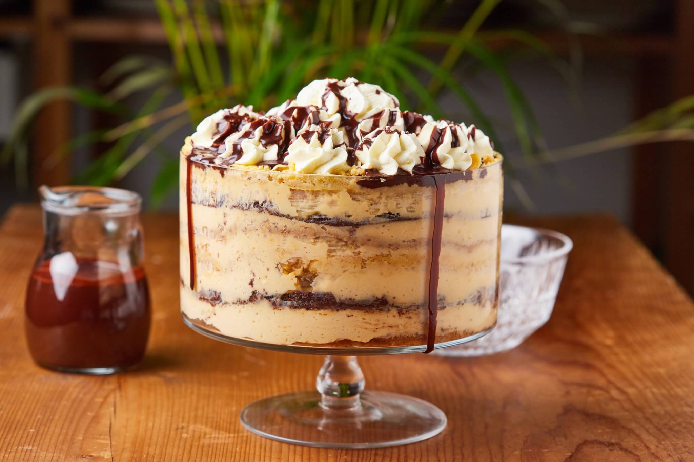

Somlói Galuska

Description
This decadent Hungarian trifle recipe is known as somloi galuska (shom-loh-ee gah-LOOSH-kaw) and is made with three different-flavored sponge cakes, pastry cream, raisins, walnuts, chocolate sauce, and whipped cream.
The traditional presentation is to scoop three balls of this dessert into a bowl or on a plate, dollop with whipped cream and garnish with chocolate sauce. A modern presentation is to cut it into squares so the different layers are evident. Rum is traditionally used in the simple syrup and chocolate sauce, but it can be omitted.
Ingredients
- 1 Walnut Sponge Cake
- 1 Cocoa Sponge Cake
- 1 Plain Sponge Cake
- Vanilla Pastry Cream
Steps
- Prepare plain sponge cake, cocoa sponge cake, and walnut sponge cake per recipe instructions.
- Prepare vanilla pastry cream per recipe instructions.
- Meanwhile, make the Rum Simple Syrup by stirring the sugar, water, and orange and lemon zest, if using, in a small saucepan over medium heat until boiling. Continue to boil without stirring until the syrup has reduced slightly, about 5 minutes. Cool completely and stir in the rum, if using, and remove the zests, if using.
- In a small saucepan, boil apricot preserves over medium heat and keep warm. Combine walnuts and raisins in a small bowl and set aside.
- Place walnut sponge cake in the bottom of a 13x9-inch rectangular pan. Brush with 1/3 rum simple syrup, then spread with warm apricot preserves. Spread 1/3 pastry cream over the preserves and 1/2 the walnut-raisin mixture.
- Next, place the cocoa sponge cake in the pan, pressing down lightly. Brush with 1/3 rum simple syrup and 1/3 pastry cream. Sprinkle remaining walnut-raisin mixture on top.
- Top with plain sponge cake, pressing down lightly. Brush with remaining rum simple syrup and remaining 1/3 pastry cream. Sift 3 tablespoons cocoa powder over top. Cover with plastic wrap and refrigerate for at least 8 hours or overnight.
- To make the Rum Chocolate Sauce: In a small saucepan over medium heat, bring 3/4 cup water, 3 tablespoons rum (if using), 6 ounces chopped chocolate and 3/4 cup sugar to a boil, stirring often. Reduce heat and cook at a brisk simmer, stirring often, until thickened, about 5 minutes. Cool slightly and serve warm.
- To serve: The traditional presentation is to use a 2-inch ice cream scoop and place three "dumplings" in a bowl or on a dessert plate, then pipe with sweetened whipped cream and drizzle with the Rum Chocolate Sauce. A modern presentation is to cut the dessert into squares to show off the layers and then garnish with whipped cream and sauce.
Home